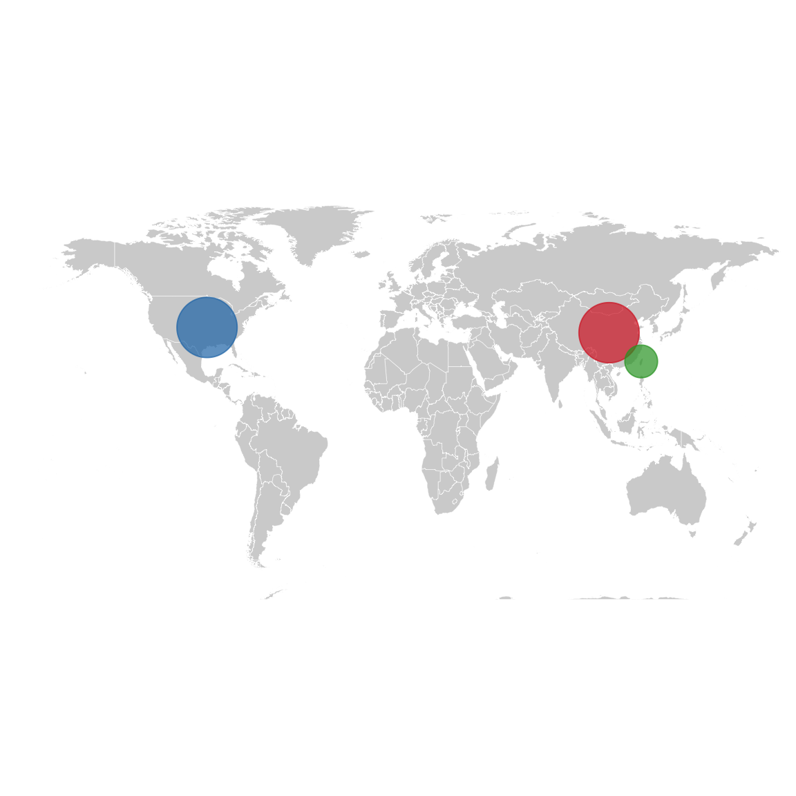
The U.S., Taiwan, and China
Risks and Rewards
Karl Ho
2026-01-13
The U.S., Taiwan, and China
Risks and Rewards
A Critical Relationship
Shaping the 21st Century
Taiwan at a Glance
Key Facts
Taiwan is a prosperous democracy of 23.5 million people - comparable to Florida in population.
Economic Powerhouse:
- GDP: $790B (Switzerland-sized economy)
- GDP per capita: $33,775
- Major trading partner
Democratic Leader:
- Ranked #8 globally in democracy
- Free and fair elections
- Strong civil liberties
Despite its small size (Maryland-sized), Taiwan has achieved remarkable development.
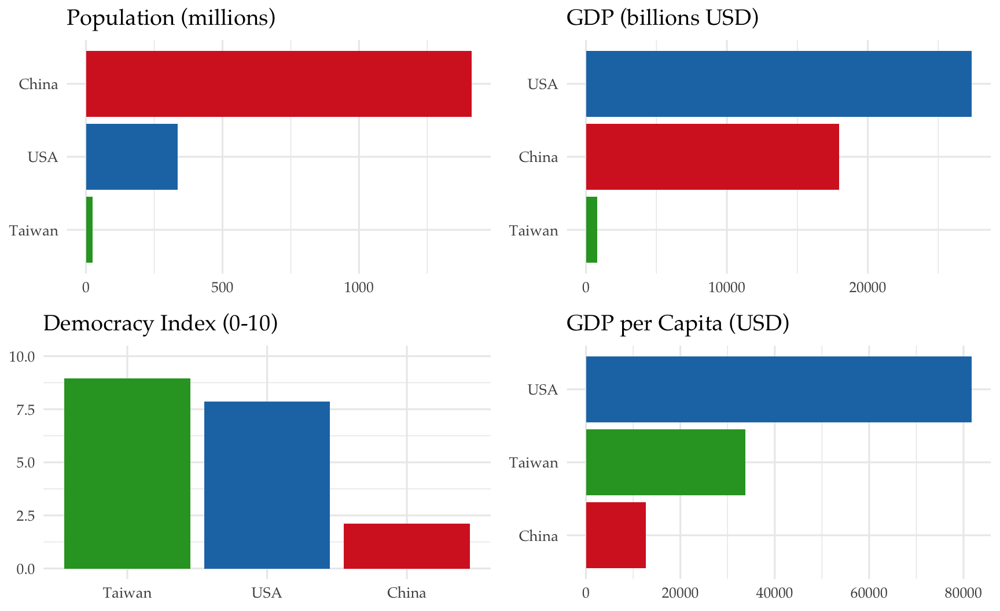
Sources: World Bank (2024), Taiwan National Statistics, EIU Democracy Index 2024, CIA World Factbook
Historical Context: End of WWII

Historical Context: The Chinese Civil War (1945-1949)
The Retreat to Taiwan
- 1945: End of WWII, Japanese surrender
- 1946-1949: Civil War resumes
- 1949: Communist victory
- Mao establishes PRC (Oct 1)
- Chiang retreats to Taiwan
- 1950s: Two governments claim legitimacy
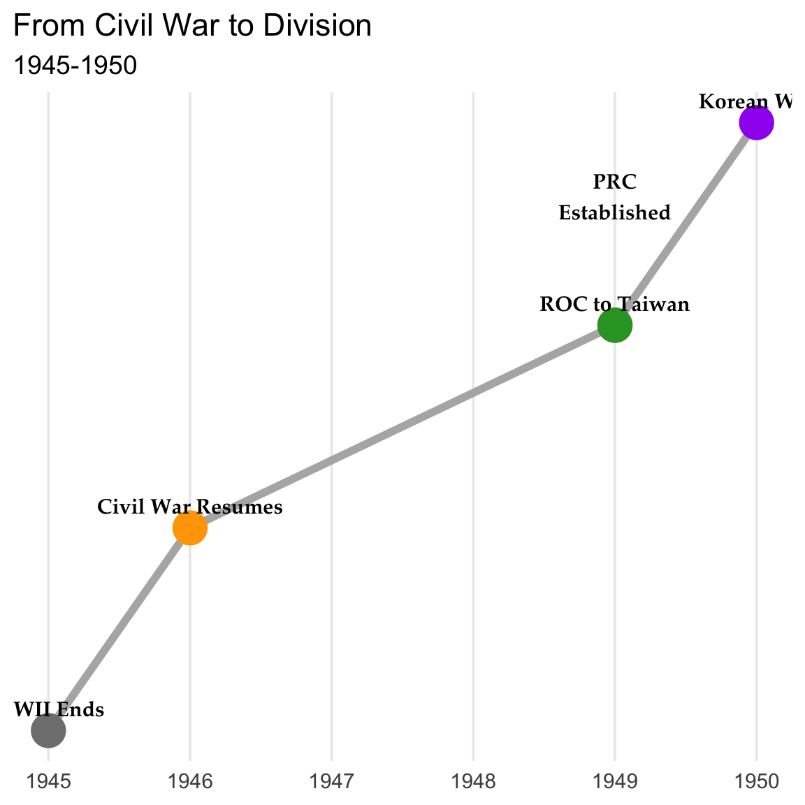
The “Two Chinas” Question
The Dual Claim
Both Beijing and Taipei claim to be the legitimate government of all China.
PRC (People’s Republic):
- Controls mainland China
- Holds UN seat (since 1971)
- 180+ countries recognize
- “One China” policy enforced
ROC (Republic of China):
- Governs Taiwan
- Lost UN seat in 1971
- Only 12 diplomatic allies
- De facto independent
Both claim the same territory, but only one has international recognition. This creates unique diplomatic complexity.
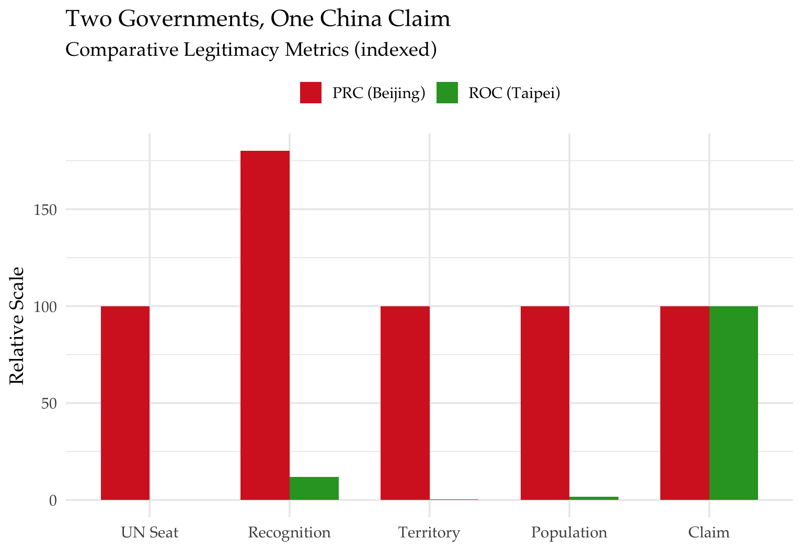
Analysis based on official recognition, UN membership, territorial control
Taiwan’s Diplomatic Isolation
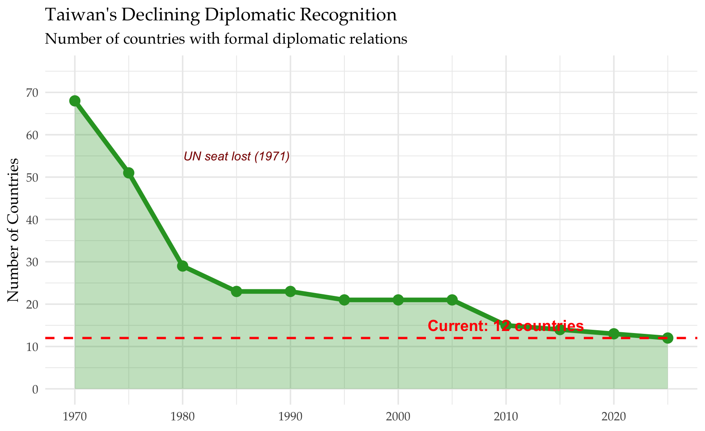
Source: Taiwan Ministry of Foreign Affairs; Council on Foreign Relations (Council on Foreign Relations 2024)
Steady Decline
From 68 countries in 1970 to just 12 today.
Key Turning Point:
- Lost UN seat (1971)
- PRC recognition surge
Recent Losses:
- Honduras (2023)
- Nicaragua (2021)
- Panama, El Salvador (2018)
Beijing’s Pressure:
- Economic incentives
- Political coercion
- “One China” enforcement
Despite isolation, Taiwan maintains robust informal ties with major economies including the U.S., Japan, and EU.
Evolution of U.S. Policy: Three Pillars
Policy Foundation
Three Documents:
1972 Shanghai Communiqué
- Acknowledges “One China”
- Does not endorse PRC claim
1979 Taiwan Relations Act
- Legal basis for unofficial ties
- Security commitments
- Most important pillar
1982 Six Assurances
- No arms sales termination
- No PRC consultation on Taiwan
- Sovereign decisions respected
Strategic Ambiguity: Deliberate vagueness on defense commitment keeps all sides cautious.
Recent shifts toward greater clarity on U.S. support.
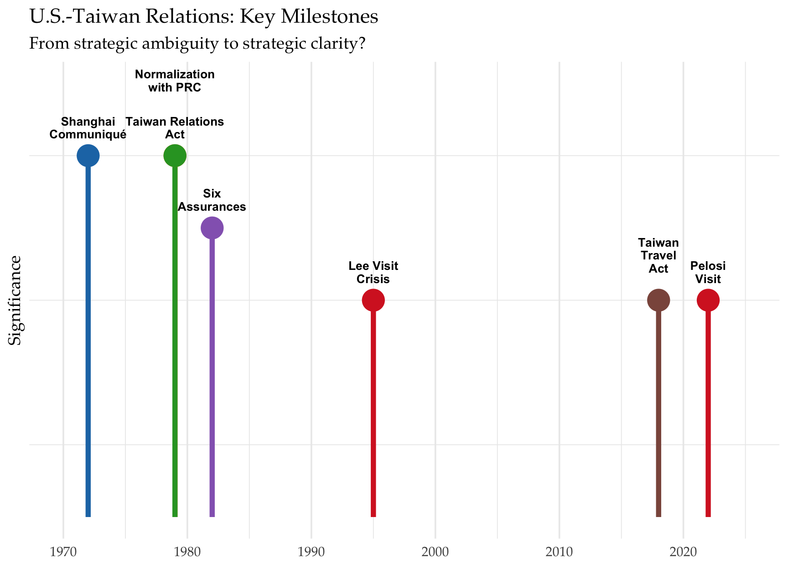
Key policy milestones shaping U.S.-Taiwan relations
Cross-Strait Relations: The Status Quo
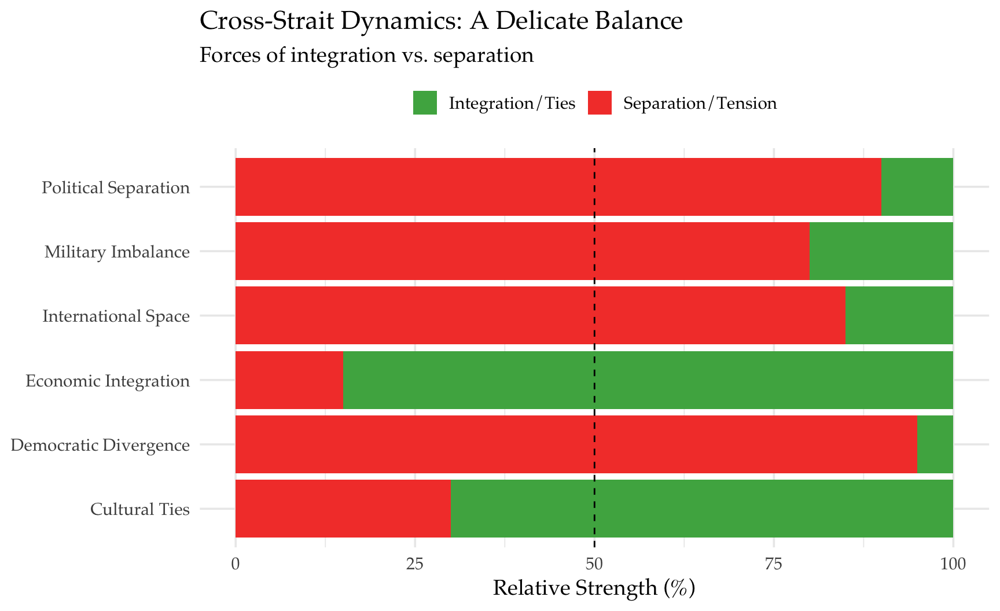
Assessment of competing forces in cross-Strait relationship
Public Opinion

The Paradox
Deep economic integration alongside growing political divergence.
Integration Forces:
- $190B+ annual trade
- Supply chain interdependence
- Cultural/linguistic ties
- Tourism, family connections
Separation Forces:
- Distinct political systems
- Taiwan identity strengthening
- Military imbalance widening
- Diplomatic competition
This creates complex interdependence that both stabilizes and complicates the relationship.
Status quo: stable but fragile.
Taiwan’s Semiconductor Dominance
Critical Dependency
Taiwan controls over 65% of global chip manufacturing.
TSMC Dominance:
- 58.9% global market share
- World’s most advanced foundry
- No close competitors
Why It Matters:
- Every smartphone depends on Taiwan chips
- All major tech firms are customers
- Apple, NVIDIA, AMD, Qualcomm
- Cannot be quickly replicated
Strategic Implications:
- Single point of failure
- 2-3 year lead in technology
- Geopolitical chokepoint
- National security concern
As Chris Miller notes in Chip War, this dominance resulted from decades of strategic investment.
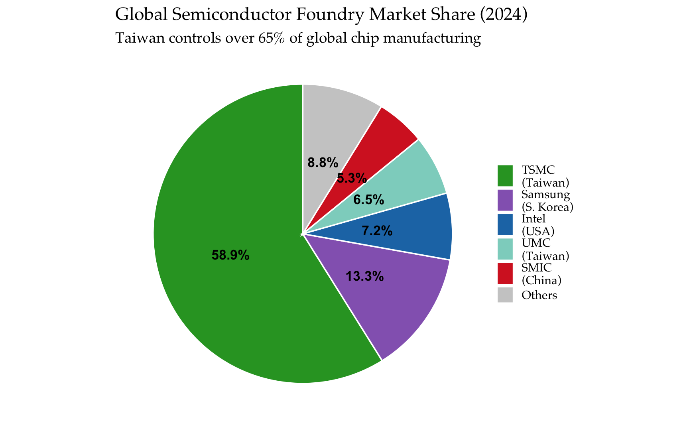
Source: TrendForce Q3 2024 Foundry Market Analysis (TrendForce 2024); Miller (2022) (Miller 2022)
Advanced Chip Manufacturing: Taiwan’s Near-Monopoly
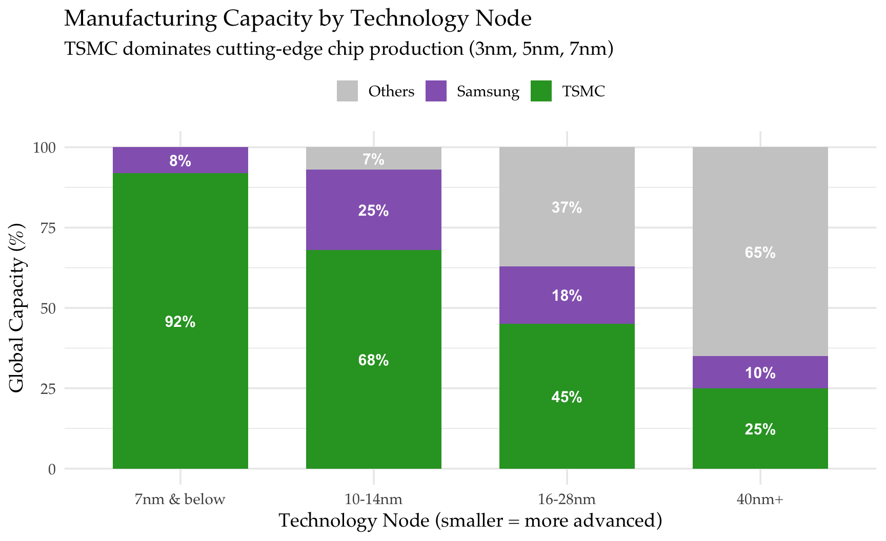
Source: BCG-SIA Report 2024 (Boston Consulting Group and Semiconductor Industry Association 2024); TSMC Annual Report 2024
Near-Monopoly on Advanced Tech
TSMC controls 92% of cutting-edge chip production (7nm and below).
Why This Matters:
- 7nm and below = AI chips
- Powers all major AI models
- Required for high-performance computing
- Smartphones, data centers
The Technology Gap:
- TSMC: 2nm production (present 2025)
- Samsung: 3nm (struggling)
- Intel: 7nm (delayed multiple times)
- China (SMIC): Stuck at 14nm+
Lead Time:
- Minimum 2-3 years to replicate
- Requires $20B+ investment
- ASML equipment export restricted
- Know-how not easily transferred
Cannot be quickly replaced.
The AI Revolution: Taiwan’s Strategic Value
The AI Chokepoint
Every AI model depends on Taiwan-manufactured chips.
Supply Chain Reality:
- AI chip design: NVIDIA, AMD, Apple
- Manufacturing: TSMC 90%+
- Equipment: ASML (Netherlands)
- Applications: ChatGPT, Claude, etc.
Critical Dependency:
- No Taiwan chips = No AI advancement
- Training large models requires cutting-edge chips
- Only TSMC can make them at scale
As Gregory Allen notes: “AI runs on specialized semiconductors, and those semiconductors are made in Taiwan.”
This creates both economic opportunity and strategic vulnerability.
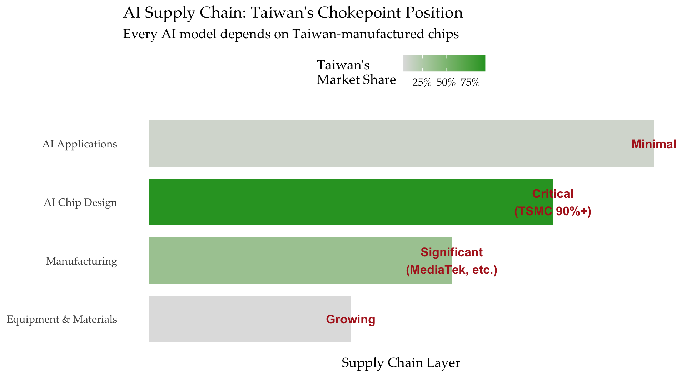
Analysis based on: Georgetown CSET Reports (Ding and Triolo 2024); Brookings Tech Policy (Allen 2024)
U.S.-China Tech Competition
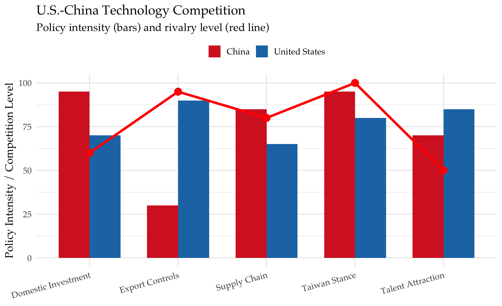
Sources: White House CHIPS Act (2022); China State Council “Made in China 2025”; CSIS China Power (Kennedy 2024)
Taiwan Caught in Middle
Both superpowers compete for technology supremacy.
U.S. Strategy:
- Export controls on China
- CHIPS Act ($52B investment)
- Restrict advanced chip sales
- Ally coordination
China Strategy:
- “Made in China 2025”
- Massive domestic subsidies
- Self-sufficiency push
- Taiwan reunification goal
Taiwan’s Position:
- Critical to both sides
- Pressure from Beijing
- Security from Washington
- Economic ties with all
Highest Tension: Taiwan stance—both see it as winner-take-all issue.
U.S. Western Hemisphere Refocus
Competing Priorities
While Indo-Pacific remains high priority, Western Hemisphere attention is growing.
Key Trends:
- Venuezuelan crisis
- Cuban normalization talks
- Iran
- China: “Thucydides Trap”?
- Critical minerals sourcing
Tensions:
- Limited resources
- Multiple crises demand attention
- China expanding in Americas
- Ukraine support ongoing
Implications for Taiwan:
- Competition for policy bandwidth
- Need to maintain salience
- Economic security arguments
- Values-based case stronger
Indo-Pacific still Most Important in the long term, but not sole focus.
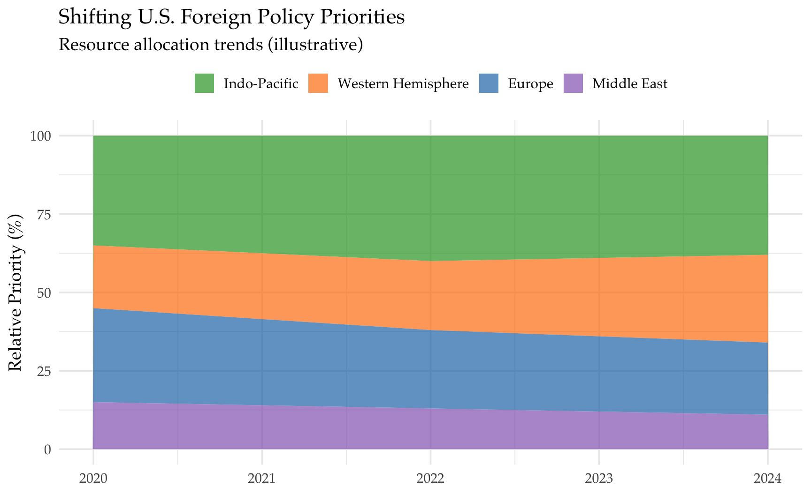
Illustrative trends based on budget allocations, diplomatic visits, and policy statements
Why Taiwan Matters to the United States

Analysis framework adapted from: Bush (2021) (Bush 2021); Hass & Glaser (2024) (Hass and Glaser 2024)
Four Dimensions
U.S. interests in Taiwan are interconnected and compelling.
Economic (95):
- Semiconductor dependency
- $100B+ bilateral trade
- Technology innovation hub
Strategic (90):
- First Island Chain keystone
- Pacific sea lanes
- Regional power balance
Values (75):
- Vibrant democracy
- Human rights model
- Self-determination
Credibility (90):
- Allied confidence
- Deterrence effectiveness
- Rules-based order
Not just one reason—Taiwan matters across all dimensions simultaneously.
Risk Assessment: Potential Scenarios
Scenario Analysis
High Risk Quadrant:
- Military conflict (25% prob, 100 impact)
- Blockade (35% prob, 90 impact)
- Accidental escalation (40% prob, 85 impact)
Most Likely:
- Gray zone ops (85% ongoing)
- Economic coercion (60%)
- Cyber warfare (70%)
Critical Window:
- 2027-2035 particularly concerning
- PLA modernization timeline
- Xi’s political imperatives
- U.S. force posture gaps
Key Insight: Status quo appears stable but is actually fragile. Low-probability/high-impact events require serious preparation.
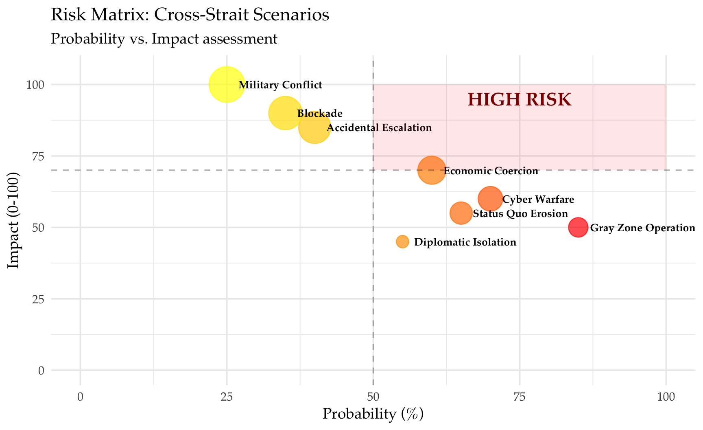
Sources: CSIS Taiwan Wargames (Cancian, Cancian, and Heginbotham 2023); RAND China Scorecard (Heginbotham et al. 2024); Expert assessments (Mastro 2024)
Risk assessments synthesized from: CSIS Taiwan Wargames (Cancian, Cancian, and Heginbotham 2023); RAND “War with China” (Heginbotham et al. 2024); DOD Indo-Pacific Strategy 2024; Expert surveys (Mastro 2024)
Rewards of Engagement with Taiwan
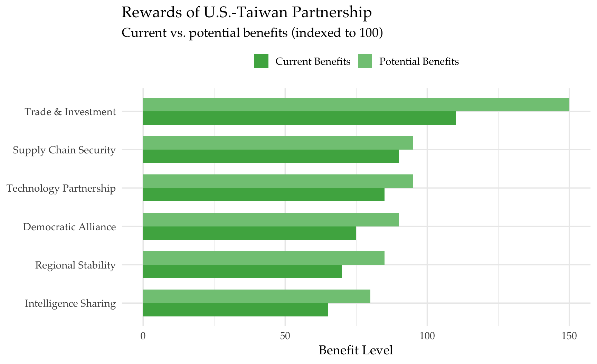
Data: U.S. Trade Representative (2024); Benefits framework from Hass & Glaser (Hass and Glaser 2024)
Strategic Rationale
Engagement with Taiwan advances multiple U.S. interests simultaneously.
Current Benefits:
- $110B bilateral trade
- Critical semiconductor access
- Democratic partnership
- Regional stability anchor
- Intelligence cooperation
Untapped Potential:
- Deeper technology collaboration
- Expanded trade ($150B possible)
- Enhanced supply chain resilience
- Stronger democratic network
- Greater intelligence integration
Why Deepen Ties:
- Mutual economic gains
- Shared security interests
- Values alignment
- Counter-PRC coercion
- Support self-determination
Partnership not just defensive—also proactive and beneficial.
The Economic Interdependence Paradox
The Paradox
Deep economic integration makes conflict less likely yet more costly.
Trade Reality:
- Taiwan→China: $190B (highest)
- USA→China: $575B
- Taiwan→USA: $110B
- All three deeply connected
The Contradiction:
- Economic ties create peace incentives
- But also create vulnerability
- Conflict would devastate all three economies
- Yet tensions persist
Stability Through Interdependence?
- Historical precedent mixed
- WWI despite trade links
- But also: EU integration worked
Key Question: Does interdependence prevent conflict or just make it more catastrophic?
Current answer: Both.
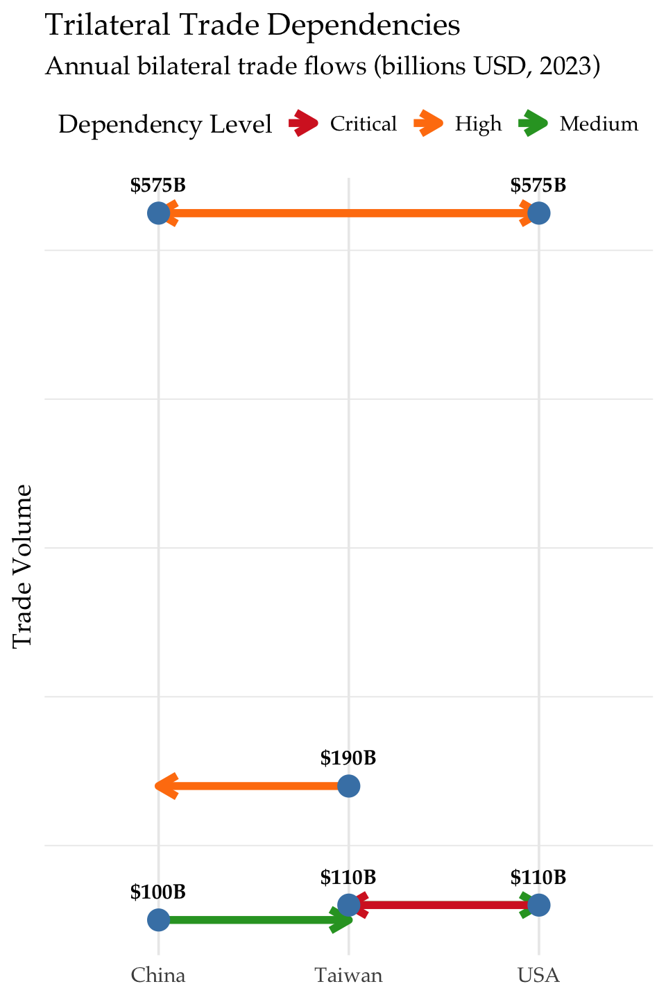
Sources: U.S. Trade Representative (2023); Taiwan Bureau of Foreign Trade; China Customs (ustr2023taiwan?)
Trade data: U.S. Trade Representative 2023; Taiwan Bureau of Foreign Trade; China Customs Statistics
Navigating Uncertainty: The Path Forward
Key Strategic Imperatives
1. Strengthen Deterrence (Green and Hicks 2024)
- Military capability
- Alliance coordination
- Clear communication
2. Maintain Dialogue (Bush 2021)
- Crisis management
- Cultural/economic exchange
- Track II diplomacy
3. Diversify Supply Chains (Kennedy and Sutter 2024)
- CHIPS Act implementation
- Friendshoring initiatives
- Resilience over efficiency
4. Support Democratic Taiwan (Diamond 2024)
- International space
- Institutional ties
- People-to-people exchange
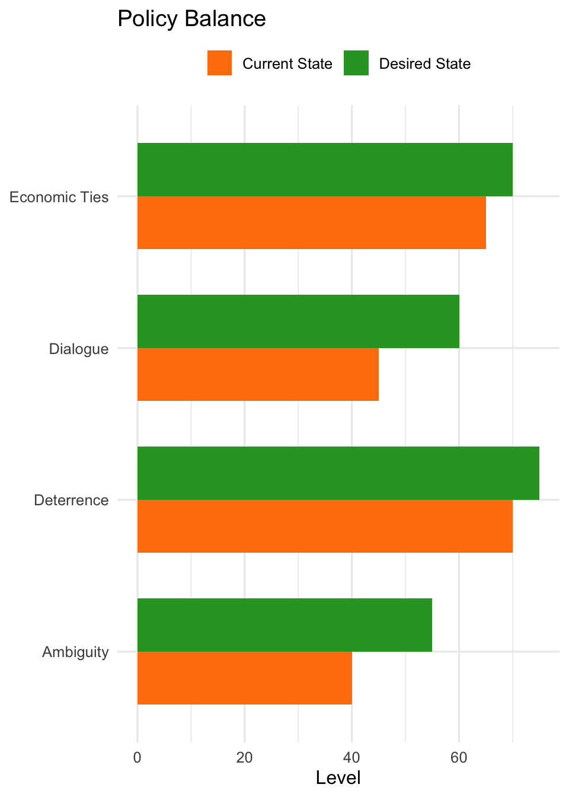
Critical Questions for the Future
Near-term (2025-2027)
- Can deterrence prevent conflict?
- How will U.S. elections affect policy?
- Will chip diversification succeed?
- Can cross-strait dialogue resume?
Medium-term (2027-2035)
- Will strategic ambiguity hold?
- Can Taiwan maintain its tech edge?
- How will demographics shift in Taiwan?
- What role for multilateral frameworks?
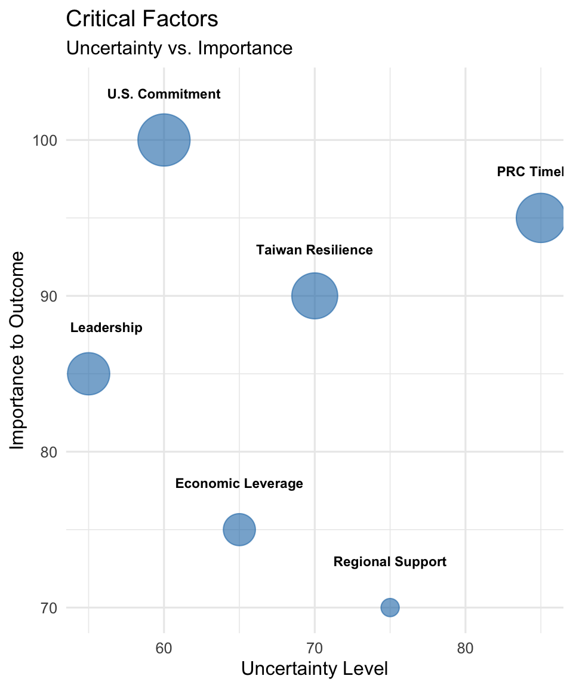
Conclusion: Stakes and Choices
The Stakes
- Global economy depends on Taiwan chips
- Democratic values tested by authoritarian pressure
- U.S. credibility tied to Taiwan’s security
- Regional order hangs in the balance
The Choice
Not whether to engage, but how:
- Deterrence + dialogue
- Clarity + flexibility
- Partnership + prudence
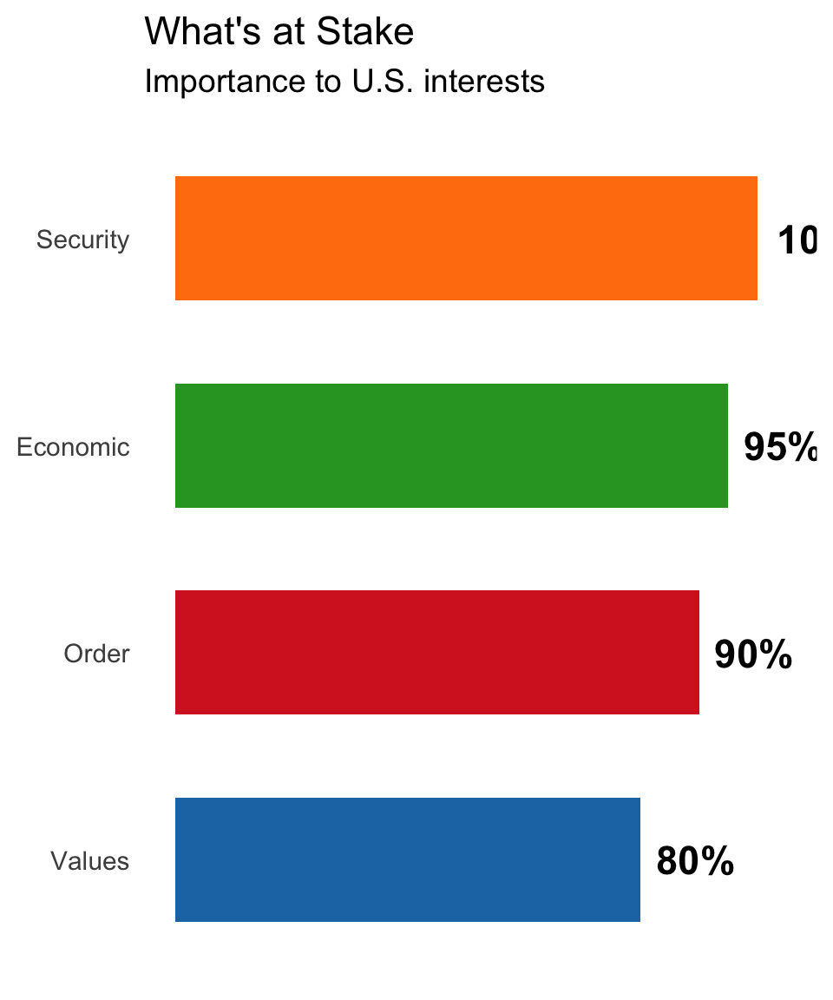
Taiwan is not just a policy challenge—it’s a test of whether democracies can sustain partnerships, maintain technological leadership, and uphold international norms in an era of great power competition.
References
Allen, Gregory C. 2024. “Chokepoints: China’s Self-Identified Strategic Technology Import Dependencies.” Brookings Center for Security and Emerging Technology. https://www.brookings.edu/articles/chokepoints-china-strategic-technology-import/.
Boston Consulting Group and Semiconductor Industry Association. 2024. “Government Incentives and US Competitiveness in Semiconductor Manufacturing.” Industry Report. BCG-SIA.
Bush, Richard C. 2021. Difficult Choices: Taiwan’s Quest for Security and the Good Life. Washington, DC: Brookings Institution Press.
Cancian, Mark F., Matthew Cancian, and Eric Heginbotham. 2023. “The First Battle of the Next War: Wargaming a Chinese Invasion of Taiwan.” Report. Center for Strategic; International Studies (CSIS). https://www.csis.org/analysis/first-battle-next-war-wargaming-chinese-invasion-taiwan.
Council on Foreign Relations. 2024. “China-Taiwan Relations: Tension and the u.s. Policy.” CFR Backgrounder. https://www.cfr.org/backgrounder/china-taiwan-relations-tension-us-policy.
Diamond, Larry. 2024. “Taiwan’s Democracy and the China Challenge.” Journal of Democracy 35 (4): 19–33.
Ding, Jeffrey, and Paul Triolo. 2024. “The AI Supply Chain and China’s Semiconductor Ambitions.” Issue Brief. Georgetown Center for Security; Emerging Technology (CSET).
Economist Intelligence Unit. 2024. “Democracy Index 2024.” EIU Report. https://www.eiu.com/n/campaigns/democracy-index-2024/.
Glaser, Bonnie S. 2024. “Beijing’s Campaign to Isolate Taiwan Diplomatically.” Council on Foreign Relations Analysis Brief.
Green, Michael J., and Kathleen H. Hicks. 2024. “Deterrence in the Taiwan Strait.” CSIS Analysis. https://www.csis.org/analysis/deterrence-taiwan-strait.
Hass, Ryan, and Bonnie Glaser. 2024. “Managing u.s.-Taiwan Relations in an Era of Strategic Competition with China.” Brookings Foreign Policy. https://www.brookings.edu/articles/managing-u-s-taiwan-relations/.
Heginbotham, Eric et al. 2024. “The u.s.-China Military Scorecard: Forces, Geography, and the Evolving Balance of Power.” Research Report. RAND Corporation. https://www.rand.org/pubs/research_reports/RRA392-1.html.
Kennedy, Scott. 2024. “U.s.-China Technology Competition: Impacts and Policy Responses.” Report. Center for Strategic; International Studies (CSIS).
Kennedy, Scott, and Karen M. Sutter. 2024. “The Semiconductor Supply Chain: Assessing National Competitiveness.” Report. Center for Strategic; International Studies (CSIS). https://www.csis.org/programs/economics-program/semiconductor-supply-chain.
Mastro, Oriana Skylar. 2024. “The Taiwan Temptation: Why Beijing Might Resort to Force.” Foreign Affairs 103 (6): 56–72.
Miller, Chris. 2022. Chip War: The Fight for the World’s Most Critical Technology. New York: Scribner.
TrendForce. 2024. “Global Foundry Market Analysis Q3 2024.” Market Report.
Questions & Discussion
Key Takeaways
- Taiwan’s semiconductor dominance makes it strategically indispensable
- The status quo is stable but fragile
- U.S. has compelling interests across multiple dimensions
- Risk management requires nuanced policy
- No perfect solutions, only better or worse choices
For Further Reading
Recent Reports (2024):
- CSIS: “First Battle of the Next War” (Cancian, Cancian, and Heginbotham 2023)
- RAND: “War with China Scorecard” (Heginbotham et al. 2024)
- Brookings: Hass & Glaser on Taiwan Policy (Hass and Glaser 2024)
- Georgetown CSET: AI Supply Chain Analysis (Ding and Triolo 2024)
Books:
- Chris Miller, Chip War (Miller 2022)
- Richard Bush, Difficult Choices (Bush 2021)
Journals:
- Foreign Affairs, The Taiwan Temptation (Mastro 2024)
- International Security (2024 issues)
See References slide for complete bibliography
Contact
Karl Ho karlho@utdallas.edu
Discussion Questions
- How should the U.S. balance deterrence with dialogue?
- Is strategic ambiguity still viable?
- What role should allies play?
- How can chip supply chains be diversified?
- What lessons from Ukraine apply to Taiwan?
U.S., Taiwan and China: Risks and Rewards